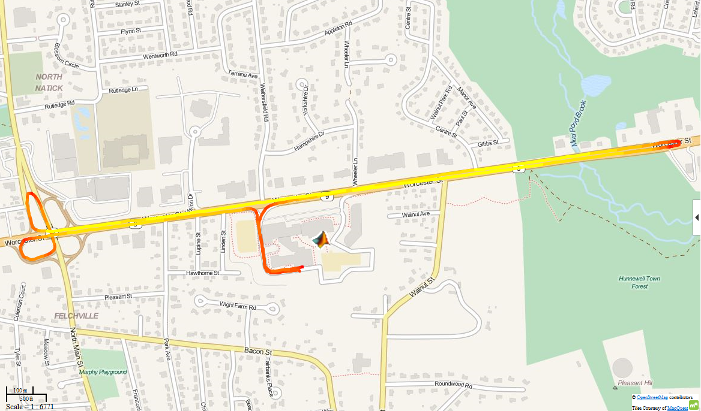

Acquire GPS Data from Your Apple® iOS Device and Plot Your Location and Speed on a Map
This example shows how to collect position data from an Apple iOS device and display it on a map. Latitude and longitude coordinates are used to mark the device's route. Speed information is used to add color to the route. The final result is a visual representation of location and speed for the device's journey.
This example requires Mapping Toolbox™.
Contents
- Setting up the connection to your mobile device
- Create a link to your mobile device
- Prepare for data acquisition from the position sensor
- Start acquiring data
- Gather position data
- Stop logging data
- Retrieve logged position data
- Bin speeds into color values
- Split latitude and longitude data by speed
- Create a web map and route overlay
- Clean up
Setting up the connection to your mobile device
In order to receive data from an Apple iOS device in MATLAB®, you will need the MATLAB Mobile™ app (version 2.0). You can download this app from App Store℠.
Use MATLAB Connector to allow connection between your desktop MATLAB session and MATLAB Mobile on your Apple iOS device. Your device must be able to connect to your desktop, either by being on the same network, using a VPN, or through a similar configuration.
In this example, a VPN was used on the device to maintain a connection to the network while driving.
Execute the connector command with a password of your choice.
connector on yourpassword;
DNS name: COMPUTERNAME.YOURDOMAIN.com IP address: 192.168.1.1 Use this link to test the MATLAB Connector: http://COMPUTERNAME.YOURDOMAIN.com:31415 If the test is successful, but MATLAB Mobile cannot connect, your computer might have multiple IP addresses. To determine the correct one, see Determining the DNS Name or IP Address of a Computer.
Your computer's DNS name and IP address are displayed on the MATLAB Command Window, along with a test link. Click on the test link to ensure that your desktop is ready to connect. The last digits after the colon on the test link correspond to the port that has been opened.
Now you can connect MATLAB Mobile to your desktop.
If you are launching MATLAB Mobile for the first time, select Connect to Your Computer. If you previously connected to the cloud or a different desktop, go to the Settings screen and select Add a Computer from the Connect to Your Computers section. On the Add a Computer screen, enter the DNS name or IP address that was displayed in the previous step. Then, enter the Connector password that you previously specified, as well as the port that was opened. Finally, press the Connect button. MATLAB Mobile should now be connected to your desktop MATLAB session.
Create a link to your mobile device
Use the mobiledev command to create an object that represents your mobile device.
m = mobiledev
m =
mobiledev with properties:
Connected: 1
Logging: 0
InitialTimestamp: ''
AccelerationSensorEnabled: 0
AngularVelocitySensorEnabled: 0
MagneticSensorEnabled: 0
OrientationSensorEnabled: 0
PositionSensorEnabled: 0
The displayed output should show Connected: 1, indicating that the mobiledev object has successfully established a connection to the app.
Prepare for data acquisition from the position sensor
In order to collect GPS data, first ensure that your device's GPS is turned on. If enabled on an Apple iOS device's location settings, mobile networks and Wi-Fi can also be used to determine position.
Enable the position sensor on your mobile device.
m.PositionSensorEnabled = 1;
It may take some time for data to appear on the Sensors screen of MATLAB Mobile, as the device will need to search for a GPS signal. GPS signals are generally unavailable indoors.
Start acquiring data
After enabling the sensors, the Sensors screen of MATLAB Mobile will show the current data measured by the sensors. The Logging property allows you to begin sending sensor data to mobiledev.
m.Logging = 1;
Gather position data
All position sensor data recorded on the device is now being logged by mobiledev.
In this example, the device was taken on a short drive around MathWorks®.
Stop logging data
Use mobiledev's logging property again to stop logging data.
m.Logging = 0;
Retrieve logged position data
To create the map, latitude, longitude, and speed data will be needed. The poslog function can be used to retrieve this information from mobiledev.
[lat, lon, t, spd] = poslog(m);
For this example, data has already been logged and saved.
load drivingAroundMathWorks lat lon spd;
Bin speeds into color values
The speed values are binned in order to use a discrete number of colors to represent the observed speeds.
nBins = 10; binSpacing = (max(spd) - min(spd))/nBins; binRanges = min(spd):binSpacing:max(spd)-binSpacing; % Add an inf to binRanges to enclose the values above the last bin. binRanges(end+1) = inf; % histc determines which bin each speed value falls into. [~, spdBins] = histc(spd, binRanges);
Split latitude and longitude data by speed
A discontinuous line segment is created for every speed bin. Each of these segments will be assigned a single color. This creates far fewer total line segments than treating every adjacent pair of latitude and longitude values as their own line segments.
The individual segments are stored as geographic features using geoshape from Mapping Toolbox.
lat = lat'; lon = lon'; spdBins = spdBins'; % Create a geographical shape vector, which stores the line segments as % features. s = geoshape(); for k = 1:nBins % Keep only the lat/lon values which match the current bin. Leave the % rest as NaN, which are interpreted as breaks in the line segments. latValid = nan(1, length(lat)); latValid(spdBins==k) = lat(spdBins==k); lonValid = nan(1, length(lon)); lonValid(spdBins==k) = lon(spdBins==k); % To make the path continuous despite being segmented into different % colors, the lat/lon values that occur after transitioning from the % current speed bin to another speed bin will need to be kept. transitions = [diff(spdBins) 0]; insertionInd = find(spdBins==k & transitions~=0) + 1; % Preallocate space for and insert the extra lat/lon values. latSeg = zeros(1, length(latValid) + length(insertionInd)); latSeg(insertionInd + (0:length(insertionInd)-1)) = lat(insertionInd); latSeg(~latSeg) = latValid; lonSeg = zeros(1, length(lonValid) + length(insertionInd)); lonSeg(insertionInd + (0:length(insertionInd)-1)) = lon(insertionInd); lonSeg(~lonSeg) = lonValid; % Add the lat/lon segments to the geographic shape vector. s(k) = geoshape(latSeg, lonSeg); end
Create a web map and route overlay
The pieces can now be combined into a webmap display. The latitude and longitude data have been processed to make up individual line segments to overlay on the map. Each line segment has a color corresponding to the speed recorded at the respective position.
Mapping Toolbox provides a number of functions for working with web maps.
Use webmap to open a web map in a browser.
wm = webmap('Open Street Map');
For reference, MathWorks is marked on the map.
mwLat = 42.299827; mwLon = -71.350273; name = 'MathWorks'; iconDir = fullfile(matlabroot,'toolbox','matlab','icons'); iconFilename = fullfile(iconDir, 'matlabicon.gif'); wmmarker(mwLat, mwLon, 'FeatureName', name, 'Icon', iconFilename);
A list of colors corresponding to the speed bins is generated using the autumn colormap. This creates an [nBins x 3] matrix with RGB values for each bin.
colors = autumn(nBins);
A line is drawn on the webmap using the geographic shape vector. Each element of the shape vector corresponds to a discontinuous line segment for a binned speed value. These elements match the elements of the color list that was just created.
wmline(s, 'Color', colors, 'Width', 5);
Zoom the map in on the route.
wmzoom(16);
The final display provides a visual representation of location and speed throughout the route. The device was clearly traveling more slowly while in the parking lot and during turns than it was on straightaways.
Clean up
Turn off the position sensor and clear mobiledev.
m.PositionSensorEnabled = 0;
clear m;